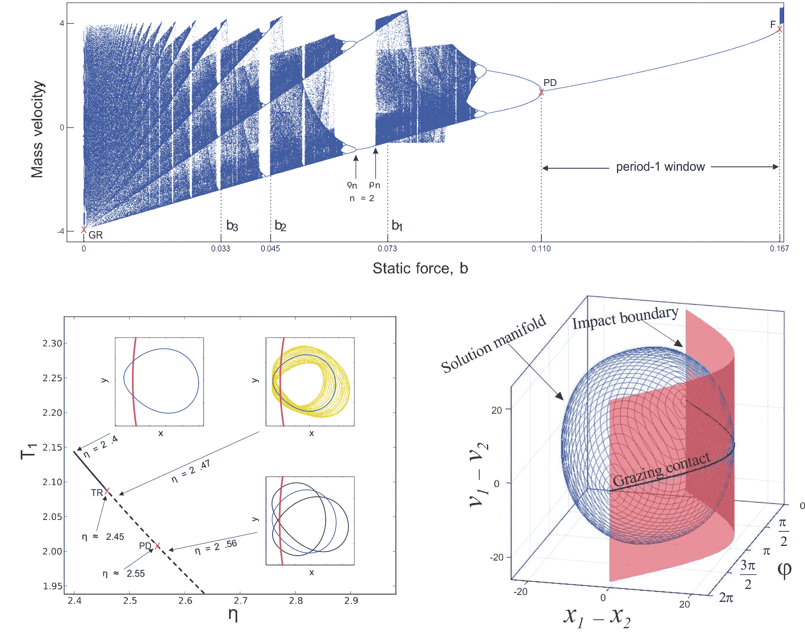

Center for Applied Dynamical Systems and Computational Methods
CADSCOM is a joint research center of the three scientific departments: Mathematics, Physics and Chemistry at the Escuela Superior Politécnica del Litoral (ESPOL), Guayaquil, Ecuador. The research center brings together scientists of various fields with a strong focus on nonlinear dynamical phenomena observed in real-world applications. Research activities are conducted at the interface between theoretical, computational and experimental approaches to address problems arising in science and engineering.
Topics of interest include:
Mathematical modelling and experimental study of real-world problems.
Bifurcations in smooth and nonsmooth differential equations.
Numerical methods and computational tools for dynamical systems.
Nonlinear oscillations in mechanics, chemistry, biology, electronics.
Modelling and control of plant and infectious diseases.

A list of selected publications is given below:
Páez Chávez, J.; Zhang, Z.; Liu, Y. A Numerical Approach for the Bifurcation Analysis of Nonsmooth Delay Equations. Communications in Nonlinear Science and Numerical Simulation, 2020 (Link).
Liu, Y.; Páez Chávez, J.; Pavlovskaia, E.; Wiercigroch, M. Analysis and Control of the Dynamical Response of a Higher Order Drifting Oscillator. Proceedings of The Royal Society of London Series A, 2018 (Link).
Páez Chávez, J.; Schreiter, J.; Siegmund, S.; Mayr, C. A Continuation Approach for Computing Parameter-Dependent Separatrices in SRAM Cells. Applied Mathematical Modelling, 2018 (Link).
Páez Chávez, J.; Götz, T.; Siegmund, S.; Wijaya, K. P. An SIR-Dengue Transmission Model with Seasonal Effects and Impulsive Control. Mathematical Biosciences, 2017 (Link).
Liu, Y.; Páez Chávez, J. Controlling Multistability in a Vibro-Impact Capsule System. Nonlinear Dynamics, 2017 (Link).
Páez Chávez, J.; Voigt, A.; Schreiter, J.; Marschner, U.; Siegmund, S.; Richter, A. A New Self-Excited Chemo-Fluidic Oscillator Based on Stimuli-Responsive Hydrogels: Mathematical Modeling and Dynamic Behavior. Applied Mathematical Modelling, 2016 (Link).
Kapitaniak, M.; Vaziri Hamaneh, V.; Páez Chávez, J.; Nandakumar, K.; Wiercigroch, M. Unveiling Complexity of Drill-String Vibrations: Experiments and Modelling. International Journal of Mechanical Sciences, 2015 (Link).
External collaborators:
Prof. Dipo Aldila, Department of Mathematics, Faculty of Mathematics and Natural Sciences, Universitas Indonesia, Depok, Indonesia (Link).
Prof. Yang Liu, College of Engineering Mathematics and Physical Sciences, University of Exeter, Exeter, United Kingdom (Link).
Prof. Thomas Götz, Mathematical Institute, University of Koblenz, Koblenz, Germany (Link).
Prof. Ekaterina Pavlovskaia, Centre for Applied Dynamics Research, School of Engineering, University of Aberdeen, Aberdeen, United Kingdom (Link).
Prof. Carla Pinto, Center of Mathematics, University of Porto, Porto, Portugal (Link).
Prof. Andreas Richter, Chair of Polymeric Microsystems, TU Dresden, Dresden, Germany (Link).
Prof. Stefan Siegmund, Center for Dynamics, Department of Mathematics, TU Dresden, Dresden, Germany (Link).
Prof. Marian Wiercigroch, Centre for Applied Dynamics Research, School of Engineering, University of Aberdeen, Aberdeen, United Kingdom (Link).
For enquiries about research collaboration and opportunities for graduate and undergraduate students, contact us at this (Link).